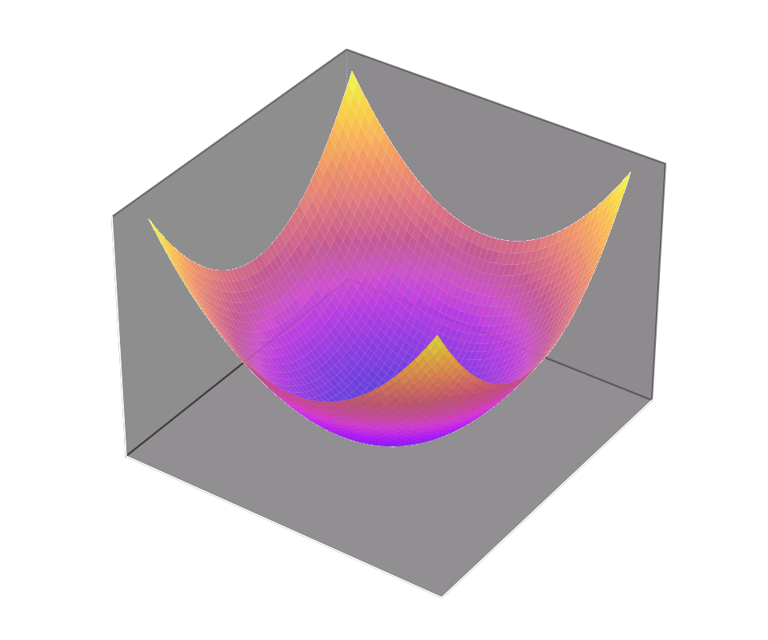
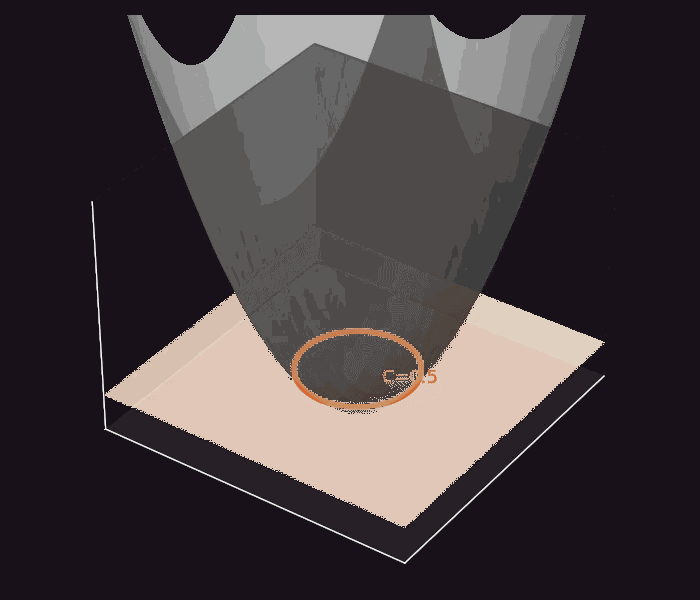
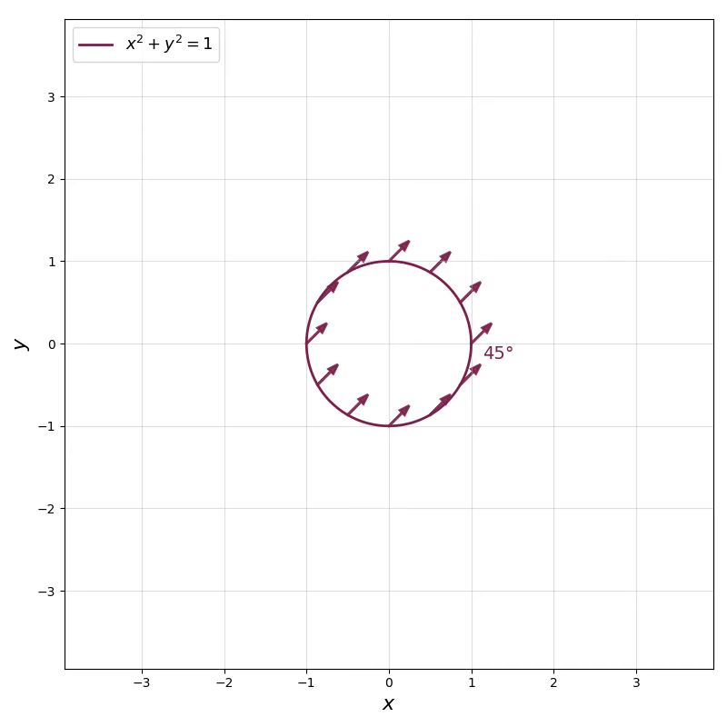
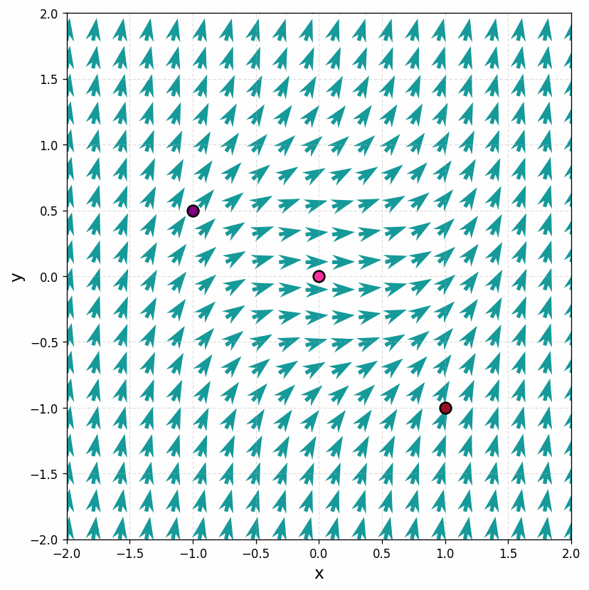

For
the slope function \( f(x,y)=x^{2}+y^{2} \) is a paraboloid. Seen from above as a heat map, equal heights form circles around the origin.


Cutting the paraboloid at height \( C \) gives the level curve
— the isocline on which every solution has slope \( C \).
On each circle we draw direction segments with that circle's slope: \( C=1 \Rightarrow 45^{\circ} \), \( C=2 \Rightarrow 63^{\circ} \), and so on — the farther from the origin, the steeper. The origin alone is the nullcline \( C=0 \).


With the field assembled, solution curves must run tangent to it at every point.